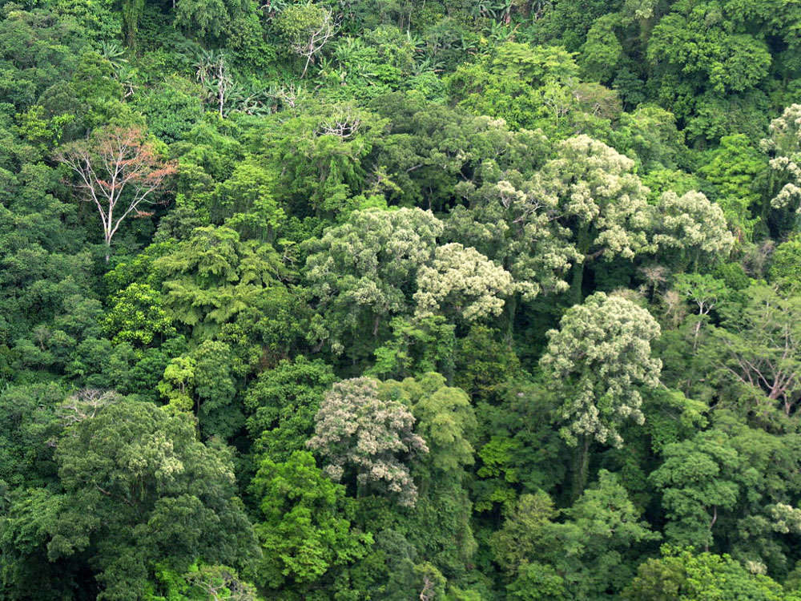

Planting Trees
Our environment needs humans’ tender loving care and we can do so by engaging in environmental activities that also improve our quality of living such as tree planting.
Trees have lots of benefits and tree growing is an essential way countries across the globe are doing to avert the harsh impacts of climate change. We have seen the damage it wrought upon us in the form of super typhoons, monsoon rains, landslides, and erratic weather conditions.
Trees highly contribute to a clean environment as they improve air quality through the process of photosynthesis – producing oxygen and taking in carbon dioxide. It also filters air intercepting unhealthy particles by removing dusts and absorbing pollutants like carbon monoxide, sulfur dioxide and nitrogen dioxide and letting the rain wash them after.
The roots of trees hold the soil in place as it fights erosion that causes landslide. It also absorbs and store rainwater that helps reduce runoff and sediment deposit after the storms. It also helps recharge ground water supply, prevents transport of chemicals into streams as well as prevents flooding. Its fruits provide food while its fallen leaves also make good compost and improve the quality of soil.
Environmental Benefits of planting Trees
- Trees reduce the urban heat island effect through evaporative cooling and reducing the amount of sunlight that reaches parking lots and buildings. This is especially true in areas with large impervious surfaces, such as parking lots of stores and industrial complexes.
- Trees improve our air quality by filtering harmful dust and pollutants such as ozone, carbon monoxide, and sulfu
- Trees give off oxygen that we need to breathe
- Trees reduce the amount of storm water runoff, which reduces erosion and pollution in our waterways and ma